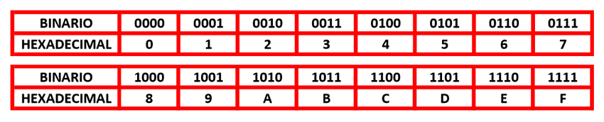

Octal a Hexadecimal
¿Que es el sistema Octal a Hexadecimal?
En el sistema octal podemos escribir números como 12457, 7561, 4571, 65742, 16457, es decir, es un sistema de números (con base de ocho) cuyos posibles valores numéricos pueden ser (0, 1, 2, 3, 4, 5, 6, 7) por cada valor posicional, mientras que en el caso del sistema hexadecimal podemos escribir números como ABC21, FFFF, 147AB, DA1B, etc, es decir, es un sistema de números y letras (con base de dieciséis) cuyos posibles valores numéricos y letras pueden ser (0, 1, 2, 3, 4, 5, 6, 7, 8, 9) para números y (A,B,C,D,E,F) para letras por cada valor posicional.
El sistema octal a hexadecimal es el proceso por el cual convertiremos cualquier numero octal en un numero hexadecimal.
¿Como se convierte de Octal a Hexadecimal?
el proceso para saber como convertir un numero octal a hexadecimal es bastante sencillo, dicho proceso de conversión se basa en pasar el numero octal a binario y posteriormente pasar ese numero binario a hexadecimal, para ello vamos a contar con dos tablas de conversión que veremos a continuación, una de ellas sera la tabla de conversión octal a binario y la otra sera la tabla de conversión binario a hexadecimal.
Tabla conversora de OCTAL a BINARIO Usa esta tabla para convertir el numero octal a binario.

Tabla conversora de BINARIO a HEXADECIMAL Usa esta tabla para convertir el numero binario a hexadecimal.
El primer paso para convertir un numero octal en hexadecimal es convertir el numero octal en binario, para ello, nos ayudaremos de la tabla conversora de octal a binario de arriba y traduciremos el numero octal escribiendo debajo de cada dígito la correspondencia en binario.
Obtenido el numero binario realizaremos la conversión de binario a hexadecimal, empezando por separar el numero binario en bloques de 4 dígitos empezando desde la derecha hasta la izquierda, tomaremos ayuda de la tabla de conversión binario a hexadecimal que hemos visto mas arriba y sustituiremos cada bloque de dígitos binarios por su correspondiente equivalente en hexadecimal, de esta forma y así de rápido ya sabes como convertir un numero octal a hexadecimal de forma manual.
Como puedes comprobar el proceso para realizar la conversión octal a hexadecimal es sencilla, si quieres puedes ver todas los demas conversores numéricos que tienes en la pagina principal.